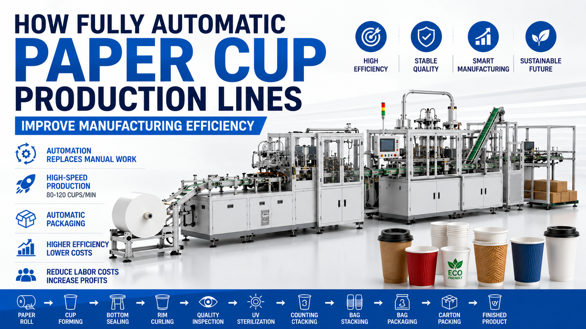

How Fully Automatic Paper Cup Production Lines Improve Manufacturing Efficiency
As global demand for disposable food packaging, takeaway beverages, and sustainable paper products continues to grow, paper cup manufacturers face increasing pressure to improve production capacity while maintaining consistent quality and reducing operating costs. Traditional paper cup production often relies heavily on manual operations for material handling, inspection, counting, and packaging. These processes create bottlenecks that limit production efficiency and increase labor expenses. Modern fully automatic paper cup production lines integrate forming, inspection, sterilization, counting, stacking, packaging, and intelligent control into one complete manufacturing system. By replacing manual operations with automation technology, manufacturers can significantly increase output, reduce labor dependence, improve hygiene standards, and establish a foundation for future smart factory development.

Summary
As global demand for disposable food packaging, takeaway beverages, and sustainable paper products continues to grow, paper cup manufacturers face increasing pressure to improve production capacity while maintaining consistent quality and reducing operating costs.
Traditional paper cup production often relies heavily on manual operations for material handling, inspection, counting, and packaging. These processes create bottlenecks that limit production efficiency and increase labor expenses.
Modern fully automatic paper cup production lines integrate forming, inspection, sterilization, counting, stacking, packaging, and intelligent control into one complete manufacturing system.
By replacing manual operations with automation technology, manufacturers can significantly increase output, reduce labor dependence, improve hygiene standards, and establish a foundation for future smart factory development.
Technology
- Core technologies used in automated paper cup manufacturing include:
- High-Speed Cup Forming Technology
- Servo Motion Control System
- PLC Intelligent Control Platform
- Vision Inspection Technology
- Automatic Counting Systems
- UV Sterilization Module
- Intelligent Packaging System
- Real-Time Production Monitoring
- Remote Monitoring Technology
- Flexible Size Changeover Technology
- Data Collection System
- Smart Factory Integration Interface
Challenge
Traditional paper cup manufacturers often face several operational challenges.
1. High Labor Dependence
Manual operations require multiple workers for handling, inspection, counting, and packaging.
2. Inconsistent Product Quality
Human operation variations often lead to defects and unstable quality.
3. Low Production Speed
Manual processes frequently become production bottlenecks.
4. Rising Labor Costs
Labor expenses continue increasing globally.
5. Hygiene Risks
Food packaging products require strict hygiene control.
6. Limited Production Visibility
Managers often lack real-time production information.
7. Difficult Production Expansion
Traditional systems are difficult to scale.
Solution
Fully automatic paper cup production lines solve these issues through intelligent automation.
Major solutions include:
Automated material feeding
High-speed cup forming
Automatic quality inspection
UV sterilization process
Intelligent counting and stacking
Automatic packaging systems
PLC process monitoring
Real-time production analysis
Smart factory integration
Workflow & Layout
Typical production workflow:
Step 1
Paper Roll Feeding
↓
Step 2
Cup Body Forming
↓
Step 3
Bottom Insertion
↓
Step 4
Bottom Sealing
↓
Step 5
Cup Rim Curling
↓
Step 6
Vision Inspection
↓
Step 7
UV Sterilization
↓
Step 8
Automatic Counting
↓
Step 9
Cup Stacking
↓
Step 10
PE Bag Packaging
↓
Step 11
Carton Packaging
↓
Step 12
Finished Product Output
Results & ROI
- Typical customer results after automation implementation:
- Production Capacity Increase:40–100%
- Labor Reduction:50–80%
- Defect Reduction:20–60%
- Product Consistency Improvement:30–70%
- Packaging Efficiency Improvement:30–80%
- Production Cost Reduction:15–40%
- Typical ROI Period:1–3 years
Equipment List
- Typical equipment configuration:
- Paper Roll Feeding System
- Automatic Cup Forming Machine
- Bottom Sealing Unit
- Rim Curling Unit
- Vision Inspection System
- UV Sterilization Module
- Counting System
- Stacking System
- Packaging Machine
- Conveyor System
- Servo Drive System
- PLC Control Cabinet
- HMI Interface
- Remote Monitoring System
- Data Analysis Platform
Project Overview / Opening
How are millions of disposable paper cups manufactured every month with stable quality and minimal labor?
As takeaway beverages, food delivery services, and coffee consumption continue expanding worldwide, manufacturers increasingly require higher production capacities while maintaining product quality and hygiene standards.
Traditional production methods struggle to meet these growing requirements.
Automation technology is transforming the paper cup industry by replacing labor-intensive operations with intelligent manufacturing systems.
Today, fully automatic paper cup production lines are becoming a critical investment for manufacturers seeking higher productivity and stronger competitiveness.
Key Points
- 1 Automation Replaces Manual Operations
- Automated systems reduce labor dependence and improve operational stability.
- 2 High-Speed Production
- Modern paper cup machines can reach:
- 80–120 cups per minute
- or higher depending on product specifications.
- 3 Automatic Packaging Integration
- Packaging systems automatically:
- Count products
- Stack products
- Package products
- Prepare products for shipping
- 4 Reduced Labor Costs
- Manufacturers can significantly reduce:
- Direct labor
- Packaging workers
- Material handling workers
- 5 Smart Factory Readiness
- Integrated control systems allow:
- Data collection
- Production monitoring
- Remote access
- Predictive maintenance
Implementation / Workflow
Typical project implementation process:
Phase 1Production requirement analysis
Phase 2Product specification evaluation
Phase 3Capacity planning
Phase 4Factory layout design
Phase 5Equipment manufacturing
Phase 6Automation programming
Phase 7Installation and commissioning
Phase 8Mass production startup
Customer Value / Results
Customers achieve significant business improvements.
Increased Production OutputMore products can be manufactured with the same factory footprint.
Lower Labor CostsFewer workers are required for production operations.
Better Product QualityAutomated control reduces process variation.
Improved Hygiene StandardsIntegrated sterilization improves food safety compliance.
Higher Operational StabilityAutomation reduces human error.
Improved Competitive AdvantageLower production cost and higher quality improve market competitiveness.
Conclusion / Next Step
The future of paper cup manufacturing is increasingly automated, intelligent, and data-driven.
Fully automatic paper cup production lines help manufacturers increase output, reduce labor costs, improve product consistency, and prepare for smart factory transformation.
As demand for hygienic and sustainable packaging products continues growing worldwide, automation investment becomes essential for long-term competitiveness.
If you are planning a paper cup factory project or evaluating manufacturing automation upgrades, our engineering team can help design a customized production solution and estimate your project investment requirements.
SEO Title
How Fully Automatic Paper Cup Production Lines Improve Manufacturing Efficiency | Smart Cup Manufacturing Guide
SEO Description
Learn how fully automatic paper cup production lines improve manufacturing efficiency through intelligent automation, high-speed production, quality inspection, and packaging integration while reducing labor costs.
SEO Keywords
- paper cup production line
- automatic paper cup machine
- paper cup manufacturing automation
- paper cup factory automation
- paper cup packaging machine
- paper cup manufacturing process
- smart paper cup production
- high-speed paper cup machine
- food packaging automation
- paper cup machine efficiency
Related Blog
Start with Your Business Challenge
Tell us about your warehouse, factory, or production requirements. We'll help you explore practical automation solutions and relevant project references.